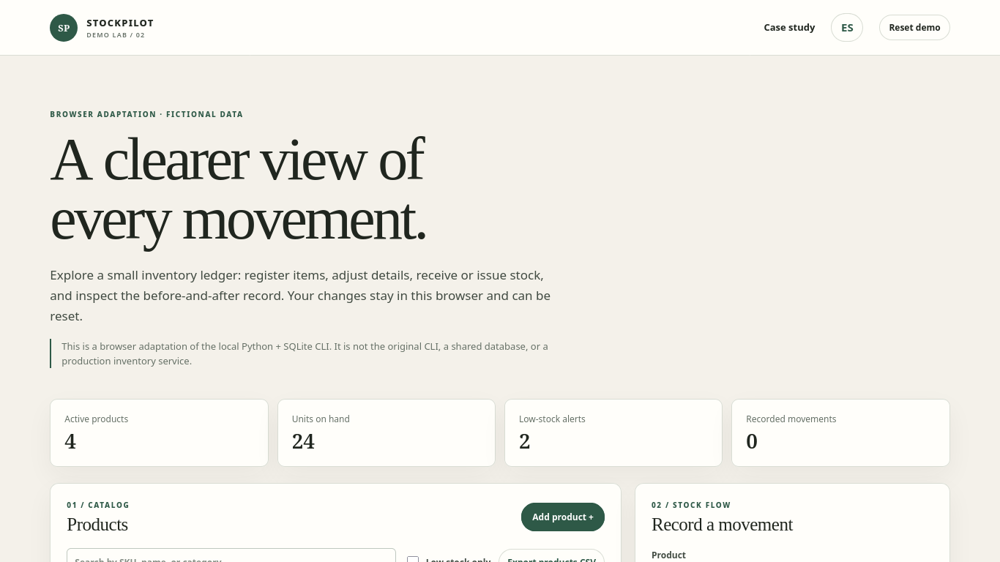

PROJECT CASE STUDY
StockPilot
A small inventory ledger you can reset
Add sample products, record receipts or issues, search stock and inspect before/after movements. Everything stays in this browser and can be reset.

Open live demo ↗01 / PROBLEM
Problem: maintain quantities and trace inventory movements.
02 / OBJECTIVE
Objective: protect stock balances and expose low-stock items.
03 / SOLUTION
Solution: browser adaptation of the project’s verified CLI operations.
04 / ARCHITECTURE
Architecture: static HTML/CSS/JavaScript and fictional browser state; no shared database or server.
05 / IMPLEMENTATION
Implementation: products, edits, receive/issue guards, low-stock filter, ledger and CSV export.
06 / TESTING
Testing: exercise both accepted and rejected movement paths.
07 / LIMITATIONS & ROADMAP
Limitations & roadmap: not the original Python/SQLite CLI; data is local demo-only and resettable.
08 / ACCESS
Access: live adaptation, source repository and technical notes.